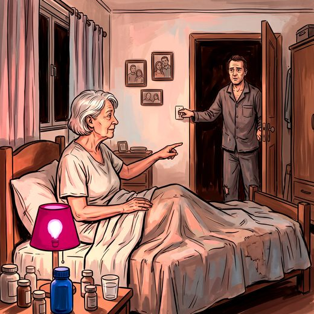

Ferramenta desta aula
Dose equivalente de levodopa. Roda no navegador, sem cadastro.
Consulta rápida à beira do leito
Condutas, doses e interações.
Referências da aula · 11
- Livingston G, Huntley J, Liu KY, et al. Dementia prevention, intervention, and care: 2024 report of the Lancet standing Commission. Lancet. 2024;404(10452):572-628.
- Emre M, Aarsland D, Albanese A, et al. Rivastigmine for dementia associated with Parkinson's disease. N Engl J Med. 2004;351(24):2509-18. PMID 15590953. doi:10.1056/NEJMoa041470.PubMedDOI
- Dubois B, Tolosa E, Katzenschlager R, et al. Donepezil in Parkinson's disease dementia: a randomized, double-blind efficacy and safety study. Mov Disord. 2012;27(10):1230-8. PMID 22915447. doi:10.1002/mds.25098.PubMedDOI
- Seppi K, Ray Chaudhuri K, Coelho M, et al. Update on treatments for nonmotor symptoms of Parkinson's disease: an evidence-based medicine review. Mov Disord. 2019;34(2):180-98. PMID 30653247. doi:10.1002/mds.27602.PubMedDOI
- Cummings J, Isaacson S, Mills R, et al. Pimavanserin for patients with Parkinson's disease psychosis: a randomised, placebo-controlled phase 3 trial. Lancet. 2014;383(9916):533-40. PMID 24183563. doi:10.1016/S0140-6736(13)62106-6.PubMedDOI
- Howell M, Avidan AY, Foldvary-Schaefer N, et al. Management of REM sleep behavior disorder: an American Academy of Sleep Medicine clinical practice guideline. J Clin Sleep Med. 2023;19(4):759-68. PMID 36515157. doi:10.5664/jcsm.10424.PubMedDOI
- American Geriatrics Society 2023 updated AGS Beers Criteria® for potentially inappropriate medication use in older adults. J Am Geriatr Soc. 2023;71(7):2052-81. PMID 37139824. doi:10.1111/jgs.18372.PubMedDOI
- O'Mahony D, Cherubini A, Guiot D, et al. STOPP/START version 3: screening tool of older people's prescriptions. Eur Geriatr Med. 2023;14(4):625-32. PMID 37256475. doi:10.1007/s41999-023-00777-y.PubMedDOI
- McKeith IG, Boeve BF, Dickson DW, et al. Diagnosis and management of dementia with Lewy bodies: fourth consensus report of the DLB Consortium. Neurology. 2017;89(1):88-100. PMID 28592453. doi:10.1212/WNL.0000000000004058.PubMedDOI
- Höglinger GU, Respondek G, Stamelou M, et al. Clinical diagnosis of progressive supranuclear palsy: the Movement Disorder Society criteria. Mov Disord. 2017;32(6):853-64. PMID 28467028. doi:10.1002/mds.26987.PubMedDOI
- Wenning GK, Stankovic I, Vignatelli L, et al. The Movement Disorder Society criteria for the diagnosis of multiple system atrophy. Mov Disord. 2022;37(6):1131-48. PMID 35445419. doi:10.1002/mds.29005.PubMedDOI
Documentos oficiais
Leis e publicações do Ministério da Saúde sobre o cuidado da pessoa idosa, de acesso livre.
Abrir os documentos